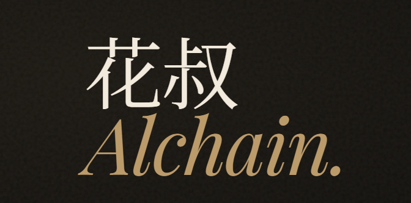
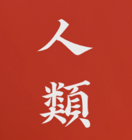

对照 · 不可删
刀隶体
爨宝子碑方向 · 你已选过的基准
与 Ref-4 宋系不同赛道；并看左侧，确认还要不要从刀隶切到高对比宋。
对照：刀隶体（你之前选定的基准，保留）。定向稿：按 ref-4「人類」的高对比宋、竖排大字 lockup，字体用思源屏显臻宋（最接近 ref 的三角衬线/横细竖粗）；配色一律站点奶油纸，不抄红底。


design-demos/preview-logo-fonts.bat →
http://127.0.0.1:8765/logo-fonts/compare-v5-editorial-song.html
与 Ref-4 宋系不同赛道；并看左侧，确认还要不要从刀隶切到高对比宋。
竖排三字大字 + 右侧横排 Hero（站点实际用法）。字体：Source Han Serif CN for Display。
竖排 = ref-4 比例 · 横排 = 顶栏 / Hero 落地
阿里妈妈刀隶 · 方笔碑刻。
横画最细，偏杂志标题。
接近 ref-4 重量感的一档。
铅印颗粒 · 与思源不同源。
与上方 Ref-4 lockup 同 family，横排对比。